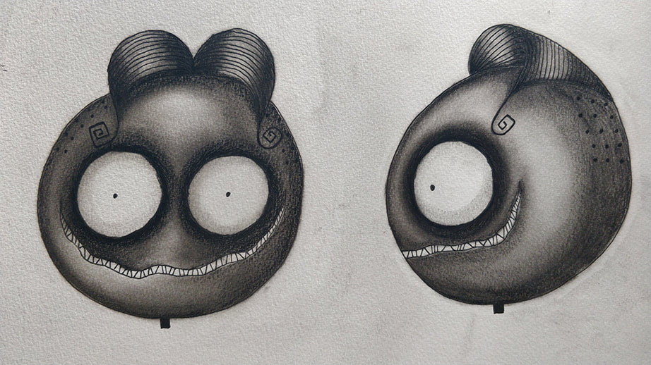
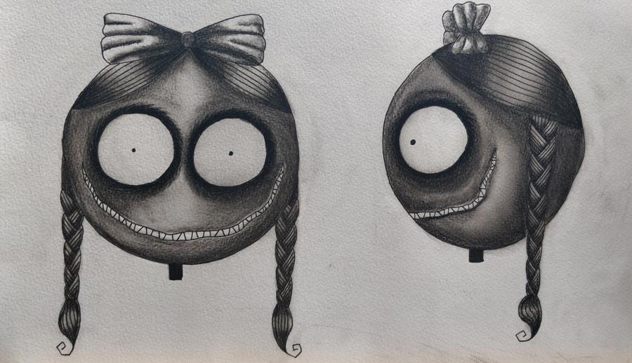
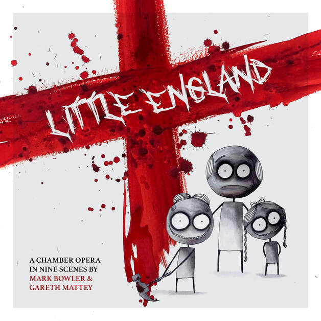

Little England
Little England – a chamber opera in nine scenes
Music by Mark Bowler
Libretto by Gareth Mattey
Jack – Nathan Mercieca
Jill – Shakira Tsindos
The Miniaturist – Andrew Randall
Artwork and character design by Sam Haynes
Synopsis
In a lonely little corner of little England, Jack and Jill appear to us with a problem. The famous duo informs us that there is a monster nearby, a Miniaturist, who lives in isolation, preying upon children and those alone after dark. They reassure us he is a threat that needs dealing with and that they are up to the challenge, and to trust them as they set off on their adventure to slay the monster.
But the Miniaturist isn't what they said — a quiet man, a conscientious man, living alone and building a model world in miniature in his home. When Jack and Jill arrive, professing to need help, he lets them in, only for the fairy tale pair to attack him. They subject him to threats, to insults, to violence and to seemingly impossible riddles as they expose who he really is — a gay man, shunned and alone, having fled a society that rejects him.
As Jack and Jill delight in exposing all of his secrets, the quiet man explodes with anger, turning their riddles against them. The Miniaturist, realising that the bigots will seek him out even here, resolves to leave his isolation and refuses to hide away anymore. Amidst the shattered remains of his little England, Jack and Jill rise again in laughter — their violent actions were, they assure us, charitable, necessary, and wholly English.
Background
Gareth and I began discussing ideas for an opera in summer of 2019 following a couple of successful, small-scale collaborative projects. This would be my first foray into the artform. Like our previous work, we knew this piece would explore queer themes and although we had the enthusiasm, we lacked a clear subject to investigate.
Gareth had wanted to make a piece called The Miniaturist, a tale about a character building a miniature world as a form of escapism. The idea lacked the answer to 'why?'
I had been exploring Tinker's House, an abandoned cottage in rural Suffolk. At the time of writing it is still accessible, though only by foot and after a twenty minute walk from the closest neighbours. If you are willing to take the risk of exploring a small, burnt-out, partially collapsed cottage you will find a time capsule: decades old furniture, kitchenware, and food packaging, and an eclectic selection of books ranging from poetry to the technicalities of sailing.


At one time you would have seen the remains of a grand piano protruding from the rubble caused by the collapse of the roof, but it is only evidenced now via rare photographs, including one taken in 2010 by Tom Heller.




I spoke with several locals who had known the man who had once lived at Tinker's House. His name was Robert James and he was an enigmatic and isolated member of the community, living a hermit's life out on the marsh. After twice settling fires within his home, the second of which caused the roof to collapse, he was offered the care he needed.
Why this intellectual musician had isolated himself remained a mystery. Several possibilities were offered to me, all corroborated to an extent. One smacked of outright rumour: that he was a gay man in denial, hiding from himself and the world. This seemed far too intimate a detail for anyone to know about a man who was prone to throw stones at people who came too close to his home. But it did provide the missing piece to our puzzle. An isolated cottage. A hermit-like miniaturist. A rumour. Add a couple of villainous, self-righteous children in the form of folk-horror versions of Jack and Jill and you have the basis for Little England.

"…folk horror is an apposite genre for our times, as it demythologises the idea of Britain's 'gloriousness'… and exposes the strange and sometimes violent history of our countryside."
— Andrew Michael Hurley, Weird Walk: A Journal of Wanderings and Wonderings from the British Isles
Plan B
As work on the opera was underway, with a confirmed staging at Milton Court Studio Theatre in London in June 2020, the pandemic arose. This project was one of the many necessarily cancelled without being rescheduled.
We had put too much work into the project for it to exist only on paper, but a staging was impossible. Instead, I decided to self-finance and produce an oddity: a recording of an opera that had never been staged. I prepared click tracks and midi versions and sent personalised recording templates to each player and singer. During the first lockdown, they recorded themselves performing four of the nine scenes.
By summer of 2021, two years after work had begun, Gareth and I had a complete recording. As restrictions were lifted we rerecorded a handful of parts in more controlled environments. This necessitated completely remixing the project and in the midst of this I became a father. Suddenly it was summer 2022 and three years had passed. But we had a recording to be proud of.


The cherry on top came in the form of Sam Haynes, who offered his artistic skills to help visualise the characters. The result is the creepy, blood-splattered artwork that accompanies the recording.
Finally, a subtitled video. My work here is done.
But perhaps it isn't… we would love for this piece to be staged or for an animation to be made to accompany it. Is this something you or someone you know could help us achieve? Please get in touch if you can help us bring Little England to a wider audience.
— Mark Bowler, November 2022
Libretto – Gareth Mattey
Jack – Nathan Mercieca
Jill – Shakira Tsindos
The Miniaturist – Andrew Randall
Flute / Piccolo – Enlli Parri
Clarinet / Bass Clarinet – Raymond Brien
Trumpet – Tom Kearsey
Piano – Natalie Burch
Percussion – Aidan Marsden
Violin – Lara Agar
Cello – Polly Bowler
Character design and artwork – Sam Haynes
Amalgamated, mixed and mastered by Mark Bowler at One Glass Eye Studios, 2020–2022.
Special thanks to Matthew King, Julian Philips, and James Alexander at Guildhall School of Music & Drama.
Recording © Copyright 2022 One Glass Eye Records
Music © Copyright 2020 Mark Bowler
Libretto © Copyright 2020 Gareth Mattey
Track List
- Scene 1: First Words – in which Jack and Jill prepare us for the story to come
- Scene 2: Little Worlds – in which we see the Miniaturist at work
- Scene 3: First Laughs – in which the Miniaturist's peace is disturbed
- Intermission No. 1
- Scene 4: A Little Riddle – in which the Miniaturist is posed his first question
- Intermission No. 2
- The Middle Riddle – in which the Miniaturist is posed his second question
- Intermission No. 3
- Scene 6: The Final Riddle – in which the Miniaturist is posed his final question and offers an answer
- Scene 7: Last Laughs – in which the Miniaturist has the last laugh without laughing
- Scene 8: Little Left – in which we see the Miniaturist abandon his work
- Scene 9: Last Words – in which Jack and Jill offer a defence of their actions
Mailing List
Subscribe to my (very occasional) mailing list: